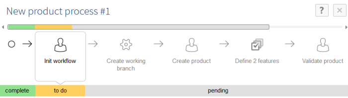
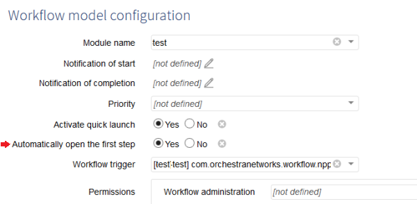
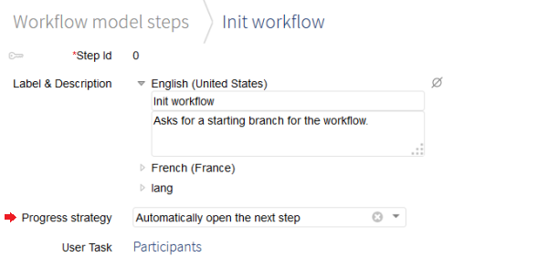
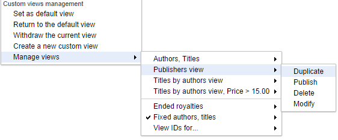
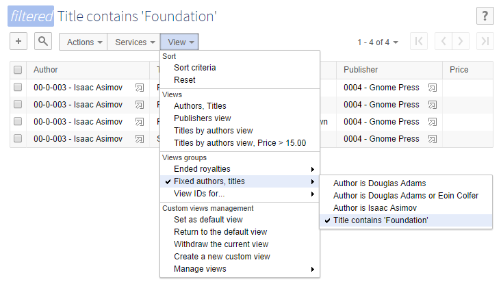

Release date: September 30, 2014
The major improvements offered by this version concern the workflow navigation and the display of associations in forms. It also provides minor improvements on various topics, complements to the Java API, as well as bug fixes.
The end user can now launch a new workflow more quickly by avoiding the workflow inbox between two work items thanks to several evolutions.
To illustrate these evolutions, let's consider the example of a product creation workflow.

This feature allows to directly launch a workflow without filling the documentation form.
For this feature to be available, quick launch must be enabled in the configuration of the workflow model.
See Quick launch for more information.
In previous versions, when launching a workflow from the workflow launchers table, the workflow launchers table was displayed again. The evolution consists in defining the expected navigation behavior after a workflow is launched: automatically open the first step, or display the table from which the workflow has been launched (workflow launchers or monitoring > publications).
Let's consider the example of the product creation workflow. The first step of this workflow consists in giving details about the expected product: which data space is concerned and what is the target product type. In this example, the first step must always be done by the workflow creator.
In this case, when a user launches a product creation workflow, it is now possible to directly open the first step: "Init Workflow". This makes workflow navigation more efficient: the user does not need to search for the created work item in the work items inbox anymore.
It is necessary to define what behavior is expected after launching a workflow in the configuration of a workflow model.

See Automatically open the first step for more information.
In previous versions, after finishing a work item, the work items inbox was displayed. The user had to select from the work items inbox the next work item to open. This evolution consists in defining the expected navigation behavior after a step is complete: automatically open the next step, or display the work items inbox.
Let's consider the example of the product creation workflow. The first step "Init workflow" and the "Create product" step must be executed by the same user. In our example, the same user must initialize the workflow and then create the product.
After the completion of the "Init workflow" step, it is now possible to directly open the "Create product" step without displaying the work items inbox, even if a script task must be executed between them. This makes workflow navigation more efficient: the user does not need to search for the following work item in the work items inbox anymore.
It is necessary to define for each step of the workflow model what behavior is expected at the end of each step.

See Progress strategy for more information.
The 'View' menu has been reorganized and custom views can now be grouped. A custom view can now be directly applied by clicking the view name.
The management of custom views has been moved to a dedicated sub-menu: 'Manage views'.

It is now also possible to group views. An administrator has to define groups beforehand in the 'Groups of views' table. The end user can then set a custom view as belonging to a group through the new field: 'View group'.

Setting the page size has been moved under the pagination information as a drop-down button. This button is also available for association elements.
When embedded in a form, the pane used for displaying associated objects is now dynamically resized according to the number of objects in the current page.
A new data model property called 'Page size' is now available for every association in order to define the default number of associated objects to be displayed. It is located in the 'Rendering in forms' group in the data modeling assistant. If this property is unset, the default page size defined by the user is applied (the one used for tabular views and hierarchies).
Last but not least, the end user can also directly change the page size for any association in the form.
It is now possible to launch UI services from an association table either on the whole table or on the selected associated objects. The available services are those defined for the target table and that the current user is authorized to execute.
In the table history view, the label of the target record for a foreign key field is displayed when available, instead of displaying the foreign key value as is. This label is computed based on the current value of the target record.
It is also possible to view the available record history if any.
Text buttons in form rows and tables have been downsized (to the same size as icon buttons). Buttons in the workspace form but outside of form rows remain unchanged.
To give them the new reduced look, buttons must be inside a container (div, span or other) with the new CSS class UICSSClasses.SMALL_FORM_BUTTONS. We recommend applying this class onto a component container to reduce all buttons of this component.
See UICSSClasses in the Java API for more information.
As a result of a bug fix, text wrapping in ComboBox items now allows multi-line. The ComboBox resizing feature remains available.
The foreign key's 'Preview' button (appearing on roll-over) has been redesigned.
To better identify the nodes that match the search filter in a hierarchy, small icons have been added to these nodes.
A downsized button next to 'Remove all' allows to hide the new icons.
Colored borders on focused fields and buttons now have rounded corners (except for IE8).
Error, warning and info flags in the message box button have been realigned.
All public API icons are now in SVG on compatible browsers.
Hitting ENTER in a ComboBox after selecting an item submits the form.
Notifying the workflow administrator with reminder and deadline emails is now optional. Fields have been added to the user task definition under the 'Reminder' and 'Deadline' tabs, to define whether the workflow administrator should be notified too.
When a user task is created, the task termination criteria "When all work items have been either accepted or rejected" is now selected by default.
The service "Clean history from completed workflows" is no longer available. This service must be improved to be more understandable and more efficient.
Thanks to the correction of bug #11688, the manipulation of lists in a UI bean has been made easier. It can fully benefit from built-in UI widgets and at the same time programmatically set elements' fields and build the list.
The method javadoc UIBeanEditor.validateInputList now provides a code example.
A new method has been added to modify a value that is an instance of a terminal group (XML Schema complex type) defined in the data model. It is useful when no custom JavaBean class is specified by the data model.
See SchemaNode.executeWrite in the Java API for more information.
The workflow trigger has been enriched. All events associated with a work item life-cycle are now available.
For example, this evolution may be used to populate business data tables or to perform statistical evaluations of the execution of work items.
See WorkflowTriggerBean in the Java API for more information.
If the property "Automatically open the first step" is enabled in the workflow model configuration, the first work item must be directly opened after launching a workflow. The class ProcessLauncher has been enhanced to get the key of the work item to open. In particular, it is useful to get the URL to access the work item to open.
See ProcessLauncher.launchProcessWithResult and ProcessLauncherResult in the Java API for more information.
The WorkflowEngine class has been enhanced to get information about a work item from its key.
See WorkflowEngine.getWorkItem in the Java API for more information.
The class ProcessInstanceKey has been updated with two new methods to persist a process instance key and parse the persisted identifier.
See ProcessInstanceKey.format and ProcessInstanceKey.parse in the Java API for more information.
Interface SchemaLocation has been updated with two new methods, to get a string representation of the location of a data model.
See SchemaLocation.format and SchemaLocation.parse in the Java API for more information.
Interface SchemaNode has been updated with a new method to know if history is disabled on a node.
See SchemaNode.isHistoryDisabled in the Java API for more information.
New interfaces and methods have been added to provide more information on the definition of associations in data models:
Interface AssociationLink has been updated to get the properties of an association defined in the data model.
See AssociationLink in the Java API for more information.
Interface AssociationLinkByTableRefInverse has been added to get the properties defined by an association that is the inverse of a foreign key.
See AssociationLinkByLinkTable in the Java API for more information.
Interface AssociationLinkByLinkTable has been added to get the properties defined by an association over a link table.
See AssociationLinkByLinkTable in the Java API for more information.
The whole data space content can be broadcasted to slave nodes, by using a dedicated action. A slave node can request a full resynchronization, to receive the whole content of the last broadcasted snapshot.
See Broadcast for more information about broadcast and full resynchronization.
For each slave delivery data space, it is now possible to set a trigger on broadcast. This corresponds to the implementation of two Java methods, which will be triggered respectively before applying the broadcast and after the end of the distributed transaction.
See D3ReceiveBroadcastTrigger for more information.
The JMS architecture has been made more flexible in order to provide shared or specific slave communication queues, depending on the customer requirement. This allows having only unidirectional queues in all types of D3 architecture, such as Master-Slave and Hub-Hub.
The D3Node.getRepositoryId and D3Node.getRepositoryLabel methods are added to retrieve the identifier and the label of a D3 node.
The D3Node.isMasterHome and D3Node.isSlaveHome methods are added to check whether the home in parameter is respectively a master or a slave delivery data space or its snapshot.
The D3NodeFactory.getCurrentD3Node method is added to retrieve the current D3 node information.
This feature is useful for reading information without creating or using a Session.
Three read-only methods become deprecated and are transferred to the interface D3Node. The goal is to allow invoking them without using a Session.
The new Java package 'com.orchestranetworks.d3.slave' has been created for the dedicated node API.
The package contains the interfaces and abstract classes related to the broadcast trigger, such as:
This resource environment provided in the deployment descriptor ('web.xml') of the main web application 'ebx.war' becomes optional, even if JMS is activated in EBX5 properties.
Exports from the user interface are now internally declared as read-only transactions, to allow better concurrency.
A new task allows purging task execution reports that have been completed for a configurable number of days.
EBX5 Tutorial has been removed from the product release due to a lack of completeness. For further information on training options, we invite you to visit http://www.orchestranetworks.com/training/.
The supported level of the Servlet API has been upgraded to 2.4 or higher. Please ensure that your application server supports this standard.
In order to upgrade your version of EBX5, perform the following steps:
Backup your repository, including the RDBMS and the directory ebx.repository.directory.
Replace the *.war and ebx.jar files on your application server.
In a D3 architecture, it is necessary to upgrade master nodes first, then hubs and finally slaves. Then, for each D3 node, the following actions must be done depending on the EBX5 product version before upgrade.
The upgrade affects the 'web.xml' located in 'ebx.war' web application and also the mapping resource environment and JNDI name, located in the same directory.
Note that, inside the web application archive ebx.war provided in the EARs, the mapping resource environments and default JNDI keys have been added for Weblogic and JBoss application servers.
The JMS resource environment 'jms/EBX_D3MasterCommunicationQueue' has been renamed to 'jms/EBX_D3MasterQueue', this resource is no longer used to receive master requests, but it is used to send requests to the master node. This resource is mandatory in 'slave' and 'hub' mode.
The JMS resource environment 'jms/EBX_D3SlaveCommunicationQueue' has also been renamed to 'jms/EBX_D3CommunicationQueue', this resource is used to receive all D3 requests (instead of slave requests only). This resource is mandatory in all D3 modes except 'single' mode.
On hub or slave nodes, inside the ebx.properties, set the ebx.jms.d3.master.repositoryId corresponding to the master repository ID.
The JMS resource environment 'jms/EBX_D3SlaveCommunicationQueue' has been renamed to 'jms/EBX_D3CommunicationQueue', this resource is used to receive all D3 requests (instead of slave requests only) then becomes mandatory in all D3 modes, except in 'single' mode. Therefore, the resource jms/EBX_QueueIn is reserved for receiving Data Services requests only and cannot be used to handle slave requests from the master node.
[11403] After the model changes, data are not replicated in the database with "On-commit" replication.
After removing a field from a replicated table, then adding it back, the data reappears in the functional table, but not in the replicated table.
[11466] Concurrent access can cause errors in the XML audit trail.
Concurrent updates in multiple data spaces can cause NullPointerException while writing the XML audit trail.
[11487] On SQL Server, it is not possible to input a date older than 1753 into a datetime field.
It is not possible to input a date older than 1753 in a xs:datetime field if the underlying database is MS SQL Server.
[11540] Inconsistent cache after refresh schemas.
After a schema refresh, it can happen that empty table caches are not invalidated. This will lead to inconsistent behavior (possible error messages: "unique constraint EBXHTB_PK violated", or "adaptation [x] does not exist in home [b]").
[11837] Impossibility to historize a table with more than 511 columns.
Historizing a table with more than 511 fields implies creating a history table having 1024+ columns in the database.
This is not allowed with SQL server, and fails with the following error: "CREATE TABLE failed because column 'C' in table 'T' exceeds the maximum of 1024 columns".
[11894] Exception when retrieving a multi-valued field from the history table.
When retrieving a multi-valued field from a historized table,
the following exception occurs:
java.lang.RuntimeException: java.lang.ClassCastException: java.util.Date cannot be cast to java.lang.Integer
This happens if the historized table has a primary key including a field of type xs:date.
[12110] Deletion in association action is not transactional if the target table and link table are in the same branch.
When an association is based on a link table, while deleting a record through the association, if an error occurs while deleting the record of the target table of the association, the record in the joint table is still deleted. The deletion in the joint table and in the target table should be in the same transaction, the roll-back should operate on both tables.
[12377] The scheduler does not start if a scheduled task refers to an unknown module.
A ModuleNotFoundException prevents the scheduler thread from starting.
[12584] In relational mode, a case-insensitive search criterion containing an underscore character does not return any result.
In relational mode, a case-insensitive search criterion containing an underscore character does not return any result if the underlying database is Oracle.
[8448] Cannot specify a label for a foreign key field if it is defined with a relative path.
When the user specifies a label for a foreign key field that is defined using a relative path in the wizard, an error message appears.
[8680] A model should not propose to include itself.
When a data model includes itself, compilation errors occur. In the list of potential data models to include, the model itself should not be proposed.
[8848] Index declarations on single foreign keys that are automatically indexed cause 'Duplicate index' errors.
This issue occurs when the user declares an index for foreign keys that are automatically indexed. In this case, validation errors are raised regarding the duplicate index at the publication.
[8918] HTML code is displayed during the 'Move' action.
In the DMA, when the user uses the 'Move' action on a field, if the table contains a field with special characters in its label, HTML code is displayed for that position instead of the arrow button.
[8921] The tooltip for 'Move' arrow button is not displayed correctly.
When the user uses the 'Move' action and hovers over the arrow button of a node that has a double-quote in its label, the displayed tooltip is incomplete.
[8967] Alignment problem occurs in the formula pane when defining a validation rule criterion.
When the user defines a validation rule criterion with 'Formula' set to 'Yes', the wizard button and the text box in Formula pane are not horizontally aligned.
[8972] It is not possible to select checkbox options by clicking their labels.
When creating an element, the user cannot select the checkbox options under 'Kind of field' by clicking their labels.
[8990] Missing data when duplicating a record in the 'Replications' table.
In the DMA, when the user duplicates a record in the 'Replications' table, all values are lost in the new record except for the primary key.
[8991] When publishing a data model, it is not possible to select the 'Save a new snapshot' option by clicking its label.
In the DMA, when publishing a data model, the user cannot select the option 'Save a new snapshot for this publication' by clicking on its label.
[9178] Icon for a user-defined attribute becomes the group icon.
When reusing an included complex data type that contains a UDA field, the UDA field's icon becomes the group icon.
[9295] A java script error is displayed after defining a criterion on a validation rule.
In Data Models, when a user adds a criterion to a validation rule on a table/field, a java script error is displayed.
[9336] Impossibility to add a reusable complex type on the root.
When defining a reusable type from an external schema and applying this reusable type to the root: no root appears after importing the schema.
[9808] No title in the documentation pane for 'Save a new snapshot for this publication'.
In the documentation pane for 'Save a new snapshot for this publication', the header of the pane is missing the title.
[10233] Facet length should be removed from the Locale field.
For a Locale field: fixed/maximum/minimum length fields should be removed from the 'Simple controls' tab since they cannot be used.
[10236] Overwritten history defined on a field becomes inherited after re-importing a data model.
This issue occurs in the data model when an element reuses a type that overwrites the history activation property. After exporting and re-importing this data model, the overwritten history property becomes inherited.
[10258] It is possible to create an inheritance link between two groups that have an incompatible structure.
This issue occurs when a data model containing a terminal group with no field inherits from another terminal group with several fields. No validation error message is raised at the publication.
[10294] Exception when publishing a data model containing a user-defined attribute field that reuses a simple data type.
When the user publishes a model containing a user-defined attribute that reuses a simple data type, an error occurs.
[10383] Cannot specify a foreign key by using the wizard button in a data model containing more than one root.
In a data model containing more than one root, when the user specifies a foreign key by using the wizard button, an error occurs.
[10530] The scrollbar on the Data model evolutions page should be hidden when data is not paginated.
On the 'Data model evolutions' page, if data is not paginated, the scrollbar should be hidden.
[10915] A java script error occurs after adding a criterion to a validation rule.
In a data model, when the user defines a validation rule by clicking on 'Add a criterion', a java script error occurs in the log.
[11240] An error occurs when creating a recursive group.
An error occurs when creating a recursive group.
[11319] No detailed documentation found in the documentation pane of the 'Component library' fields.
When creating a record in the 'Component library', the detailed documentation for the 'Component name' and 'Component type' fields is missing.
[11354] Incorrect behavior when publishing a data model containing an association with deleted field in its 'Displayed' selector.
This issue occurs in a custom view, when the user deletes from the target table a field which was previously defined in the 'Displayed' selector. An error is displayed when the user publishes the data model, even though the deleted field is no longer displayed in the 'Displayed' selector.
[11418] No documentation pane for the 'Data set reference' field on the 'Publish data model' page.
When publishing a semantic model, the 'Data set reference' field has no documentation pane.
[11436] Missing 'Simple controls' tab if the 'Selection node' property of a field is 'Not defined' in a relational model.
In a relational model containing a Selection node field, after the user sets the 'Selection node' property to 'Not defined' and sets the maximum number of values to 1, the 'Simple control' tab of this field is still missing.
[11438] Updates on data model in a module are not taken into account when publishing the data model.
The updates that are done on a data model in a module are not taken into account in existing data sets when publishing the data model. The updates are correctly generated in the target XML Schema document, but the data model needs to be explicitly refreshed to update the structure of existing data sets.
[11447] Nodes' documentation is ignored for locales other than fr-FR and en-US at schema import.
The nodes' documentation is ignored for locales other than fr-FR and en-US when importing a schema which does not belong to a module in the DMA.
[11458] Missing detailed documentation in the documentation pane of fields in 'Selection node'.
When defining a value for 'Selection node', the detailed documentation for the 'Selection path', 'Minimum/Maximum cardinality', 'Error message' fields is missing.
[11461] The 'Clear field' button is always active in 'Rendering' under the 'Default view' of a group.
In the 'Default view' of a Group under a table, the 'Clear field' button in the 'Rendering' field is active, although none of its radio buttons are selected.
[11462] No detailed documentation found in the documentation pane of the 'Rendering' field.
When defining a value for the 'Default view' of a group under a table, the detailed documentation for the 'Rendering' field is missing.
[11484] An error occurs when the DMA is not deployed.
An IllegalArgumentException occurs if the module ebx-dma is not deployed on the application server.
[11531] 'Read & Write' value is displayed as invalid in the 'Access properties' of a complex data type.
In a complex data type, when the user selects the 'Read & Write' option in 'Access properties' and clicks on Save, this value is displayed as an invalid value.
[11606] [IE 8,9] The 'Data type' drop-down menu remains displayed after changing the 'Kind of element' in the 'Add an element' screen.
On IE8 and IE9, when the user opens the 'Data type' drop-down list of a field, then changes to another kind of element without closing the drop-down menu, the drop-down menu remains displayed.
[11716] Localized parameters text fields exceed the Trigger group border after resizing the navigation pane.
When the user accesses the Trigger property of a data model element, if the user resizes the navigation pane, the text fields under Localized parameters exceed the Trigger group border.
[11939] 'Disable auto-increment checks' checkbox is not checked when its label is clicked.
In the auto-increment property of an integer field, when the user clicks on the 'Disable auto-increment checks' label, the checkbox is not checked.
[12025] Under-terminal nodes missing in the filter wizard on an association.
In the DMA, when defining a filter on an association, under-terminal nodes do not appear in the selection wizard.
[12068] 'Maximum Length' or 'Length' constraint is required on fields with disabled history or replication.
An error is displayed on unlimited-length string fields that are under a historized or replicated table, even if these fields are disabled for history or replication.
[12173] Missing documentation for the fields in the trigger creation pop-up.
In the Data model, when creating a trigger, the documentation details for the 'Component name' and 'Component type' fields are missing.
[12187] Impossible to execute the "Move" service on a root node in a model containing several roots.
In a model containing several roots, one cannot execute the "Move" service on a root element.
[12192] The severity of the validation rule messages defaults to 'Error' on XSD import.
When importing a model with a severity message 'Info' or 'Warning' for a validation rule, the severity is replaced by 'Error'.
[12239] Error on the table cleanup if all data sets have been deleted.
When all data sets associated with a data model are deleted and all data models have been refreshed: then, if the administrator launches the 'Clean up unreadable records' action, the page 'A fatal error occurred' is displayed. The same error occurs if all the data spaces using the data sets of a data model are closed.
[12305] Impossibility to re-publish a data model saved within a snapshot for its publication.
A data model already published within a snapshot cannot be re-published without saving a new snapshot for this publication.
[12319] An exception occurs when publishing a model that contains an association element in a group containing a reusable type.
When a model containing an association element in the group is published, a NullPointerExeption occurs.
[12326] The documentation of a table prefix in a relational model is erroneous.
The constraints of the table prefix in a relational model depend on the RDBMS. At the creation of the data model, the documentation of the field may not match the applied constraint.
[12372] An error occurs when publishing a historized model for some column name patterns.
When the user publishes a model containing a historized table, then creates a dataset, an error of the "Invalid identifier" type occurs if a technical column name corresponds to a reserved word in the database.
[12537] An error occurs when publishing a historized model for some column name patterns.
When the user publishes a model containing a historized table, then creates a dataset, an error of the "Invalid identifier" type occurs if a technical column name corresponds to a reserved word in the database.
[12579] Incorrect content of error message under 'Snapshot name' field when publishing a data model.
The error message is erroneous when the 'Snapshot name' field is not set when publishing a data model. The error message "Field 'Version name' is mandatory" is displayed instead of ''Field 'Snapshot name' is mandatory".
[12635] An exception occurs in the logs when publishing a data model containing a foreign key with an invalid filter.
An IllegalArgumentException is raised in the logs when a user publishes a data model with a foreign key that defines an invalid XPath filter.
[11433] Select operation has an incorrect isolation level for associated objects in another data space.
If a select operation includes associated objects or located objects, then these objects are accessed in the default read-uncommitted isolation level. This is not consistent with the serializable isolation level ensured by the data services operations.
[12329] The JMSException should be fully logged with stack trace.
In the JMS sender client, if a JMSException is thrown, the message is logged but the stack trace should also be logged in order to easily find the root reason from the JMS broker.
The JMS exception contains error codes and linked exceptions, this information should also be displayed.
[7737] An error occurs in a table comparison involving hybrid persistence modes.
A ClassCastException is thrown when invoking DifferenceBetweenTables.compareAdaptationTables(tA, tB) if table tA is not in a semantic mode and table tB is in a semantic mode.
[11508] An error occurs when accessing the history of a table that contains an inter-data set foreign key.
If a table declares a foreign key referring to a table in another data set in the same data space, an UnavailableContentError occurs when accessing the history of this table.
[11538] An error occurs when accessing the history of a table that contains a field that is unique.
If a field is set as unique in an XML Schema document (using the element xs:unique), then an error occurs when accessing the history of a table defined in the same data model.
[11633] A blank page is displayed when accessing a data space using the permalink in a defined scope.
When a user logs in using the permalink which is in the Data/Dataspace/Data set/node scope, a blank page is displayed and no error message is given.
[11673] History data model is not correctly refreshed.
Sometimes, the data model that is internally generated for the history views is not correctly refreshed as intended.
[11737] An exception occurs when accessing an historized table with non-historized fields in its label.
An exception occurs while accessing an historized table if it has a label that uses non-historized fields.
[11741] Missing space between the 'Back to first' button and the paging text line on the comparison page.
When comparing two data spaces or two snapshots, there is no space between the 'Back to first' button and the paging text line on the data space comparison page.
[11825] Redundant dot character in the 'Open' Detailed status of the Data space.
In the information view of a Data space, a redundant dot (.) character appears in the 'Open' Detailed status of the Data space.
[12065] An exception occurs while accessing the history of a table with a persisted filter applied.
If a persisted filter is applied to a table and if the criterion of the table is applied to a non-historized field, an exception occurs while accessing the history.
[12124] History property displays an undefined value if it contains a history profile with undefined documentation.
This issue occurs when the user creates a historization profile with a Documentation set to 'Not defined'. In the data model, when the user accesses the History property, only an undefined value is displayed.
[12510] Inconsistent behavior when applying filters in the 'Transaction history' table.
This issue occurs on the 'Transaction history' table, when a user applies filters without entering any value. An error message is raised: 'Filter on data space' but no error message is given for 'Filter on dates and users'.
[9089] An exception occurs while creating a record if there are too many validation messages.
An exception occurs while creating a record if there are too many validation messages.
[11448] Validation messages added by a constraint on table cannot be removed in a child data space.
Validation messages added by a constraint on table that came from a parent data space cannot be removed from the child using the method ValueContextForValidationOnRecord.removeRecordFromMessages(ValueContext). However, this method works fine after resetting the validation report of a data set in the child data space.
[11485] For a field computation rule, setting a literal formula generates a ClassCastException.
For a field computation rule, setting a literal formula as 'a' generates a ClassCastException
[11502] The validation message of a facet pattern can be erroneous if the pattern specifies a number of occurences for one of its parts.
The validation message of a facet pattern can be erroneous if the pattern specifies a number of occurences for one of its parts. In this case the validation message displays an erroneous pattern to respect.
[11751] Validation messages such as cardinality errors are not evaluated in AJAX pre-validation.
If there is an error on a mandatory field such as "Field 'F' is mandatory.", the message will disappear after AJAX pre-validation, even if the field is still empty.
[7614] Text search cannot find the expected record in a recursive hierarchy view.
When performing a text search on a hierarchy view, based on a join table with a recursive dependency link, the expected record is not returned if it is a parent node.
[8659] Erroneous content in error message for invalid patterns in record values.
When the user inputs a value that does not comply with the pattern defined for the field, the error message includes the name of the field appended to the end.
[9078] A search in the hierarchy view does not expand the tree.
When the user performs a search, the hierarchy view remains collapsed.
[9155] No item found in foreign key when searching number greater than 1000.
For a foreign key field whose label contains a number, no item is found when user searches a number greater than 1000 without thousands-separator. This behavior applies to both the 'Text search' and the combo box search.
[9199] An error occurs when displaying an enumerated field referring to a foreign key.
This issue occurs when a field that previously had a value in a data set is redefined as an enumerated field referring to a foreign key. An error occurs on this field in associated data sets after the user republishes the data model.
[9629] A fatal error occurs when searching a recursive hierarchy.
This issue occurs when the user searches in a hierarchy view on a join table with three links. If the search result contains a self-linked record, a fatal error occurs.
[9681] Duplicate nodes on a pruned and ordered hierarchy with a join table dependency link.
Duplicate nodes on a pruned and ordered hierarchy with a join table dependency link
[10136] A fatal error occurs when creating a record in a table containing a list with a computation rule.
This issue occurs when a table contains a multi-valued computed field. A fatal error occurs when the user creates a record for this table.
[10365] Warning/information validation for a unique field should have a default message.
When a warning/information validation is raised for a uniqueness constraint field which sets a default message, no message is given with the validation.
[11082] HTML content is displayed when hovering over the Next/Preview button.
This issue occurs after a user clicks on the Next/Preview button in the Calendar of a Date field. If the user hovers over these buttons, the html content is displayed in its tool tip.
[11175] [FF29,30]The bottom border of the column header is missing when clicking to sort.
On Firefox 29,30, when a user clicks on a column header of a table to sort it, the bottom border of this column header is missing.
[11233] On 'Pruned' hierarchy, branches without children are still displayed.
In hierarchy view, the hierarchy nodes that have no children and do not belong to the target table are displayed even though 'Prune hierarchy' mode is set to 'Yes'.
[11234] In hierarchy view, data is not fully displayed after setting a 'Specific constraint ' into a field.
When configuring a field to use a 'Specific constraint', then creating a hierarchy view:
- If 'Prune hierarchy' mode is 'No', then the data is not displayed.
- If 'Prune hierarchy' mode is 'Yes', then the data is wrongly displayed. Only the top most parent is displayed, instead of all parents.
[11261] A ClassCastException may occur if the user enters a term instead of a predicate expression.
If the user enters a word, i.e. bulgroz, instead of a predicate expression, i.e. ./path='a', a ClassCastException is thrown.
[11476] [IE] A Java script error is displayed after adding a logical block in the filter.
In IE, in the 'Advanced mode' filter, after adding a logical block criteria, the system displays a java script error.
[11481] Incorrect behavior when displaying a custom view with HTML tags in its 'Documentation'.
When user applies a custom view with HTML tags in Documentation, the view is displayed incorrectly.
[11505] A fatal error occurs when searching for a self-referencing foreign key defined with a relative path.
In Data views, when the user defines a relative path for a self-referencing foreign key on a table, then searches in simple mode, a fatal error occurs.
[11529] An error occurs when displaying an association by a link table which is also a source table.
This issue occurs with an association by a link table which is also a source table. An error occurs when the user deletes/detaches the association object in the record view of this table.
[11530] Incorrect behavior when creating a custom view for a table containing a labeled field.
If a field has a label, both the label and name of te field will be displayed in the "Custom view" creation screen.
[11532] A fatal error occurs when comparing records on the hierarchy view.
In the hierarchy view: if a record is clicked several times, the number of selected records displayed is "2". A fatal error then occurs when the records are compared.
[11533] The custom view that defines a filter is not filtered correctly right after creating and applying.
When the user creates a custom view which defines a filter, then applies this view, the filter is not applied correctly. The filter is only applied after the user navigates to another page and then comes back to the view.
[11537] An error occurs when recording a creation in an association table if the new record has been deleted before attachment.
The creation procedure on an association table is executed in two steps: first, the record gets created, then it is dynamically attached to the associated object.
This newly created record can be deleted in between the two steps (due to collaborative works); this will generate an error.
[11605] The name of a user-defined attribute is not displayed in a data set.
The name of an element of the 'osd:uda' type is not diplayed in data sets. A generic label 'User defined attributes' is displayed if the element has no label.
[11607] An incorrect error message is displayed when saving a record containing a user-defined attribute which has no value.
This issue occurs when saving a record containing a user-defined attribute which has no value. An error message is displayed, even though the minimum number of elements of this field is set to 0.
[11653] The name of the Custom view is not displayed.
When the user creates a custom view without defining its localized documentation, the name of this view is not displayed.
[11661] An incorrect label is displayed for the hierarchy node if the hierarchy defines a nonexistent 'Label'.
When a user defines a nonexistent field in 'Label' in the hierarchy view, the hierarchy node is displayed as a html tag.
[11666] The user is blocked on the waiting screen when adding a logical block for a criterion in a simple tabular view.
When the user clicks to add a logical block on a simple tabular view containing the Date and Time or Time criterion, the user is blocked on the waiting screen.
[11688] Impossibility to easily develop a UI bean when manipulating a list.
When a UI bean must edit a List of objects with possible inserts, deletes or reorders, it is difficult to use the built-in components provided by the API. In the method UIBeanEditor.validateInputList, if the new list is set to the context and at least one of its elements has been modified through the validation context, the following error is raised: "Updates on occurrences cannot be made safely if at the same time, the list has apparently changed".
[11690] Impossibility to "Duplicate" or "Modify" a hierarchy view which has a filter containing a decimal or integer criterion.
It is not possible to 'Duplicate/Modify' a hierarchy view which has a filter containing a decimal or integer criterion.
[11692] Value of Locale/Email/URI criteria is lost after creating these criteria in a custom view.
This issue occurs when the user creates a custom view with a filter containing a criterion such as: Locale, Email,URI, HTML, XML. When the user comes back to modify the view, the value of this criterion is lost.
[11697] A fatal error occurs when applying a hierarchy view based on a ternary join link on a self-linked record.
This issue occurs when the user applies a hierarchy view based on a ternary join link on a self-linked record. If the prune mode is set to 'Yes', a fatal error occurs when applying the view.
[11700] Leaf node is not displayed under parent node after creation in an ordered hierarchy view which sets pruned mode.
In a hierarchy view which sets pruned mode and order, when the user creates a leaf node from a parent node, the child node is displayed under 'unset' instead of the parent node.
[11708] Possibility to create a hierarchy view without selecting a dimension.
When a hierarchy view is created with all its dimensions collapsed, the user can create the hierarchical view without choosing a dimension. The system then shows an exception.
[11726] All the tables of a dataset are missing when a user clicks on a table containing a hidden primary key field.
When a user clicks on a table that contains a hidden primary key field, all tables of the dataset disappear from the navigation pane.
[11761] Impossibility to import a view definition containing a osdIsNull predicate which was exported with EBX V4.
It is not possible to import a view definition containing a osdIsNull predicate which was exported with EBX V4.
[11765] Unexpected error is displayed when running 'Mutualize common values' if child dataset contains occulting records to be deleted.
If a child dataset contains records in occulting mode to be deleted, an unexpected error occurs when the user executes the "Mutualize common values" service.
[11784] An error occurs when applying a filter to a hierarchical view after having deleted a leaf node in the tabular view.
After the deletion of a leaf node in the default tabular view, if a filter is applied to the hierarchical view, an error message is displayed.
[11790] The hierarchy view is incorrectly displayed when a filter is configured.
After creating a hierarchy view with a filter, an incorrect hierarchy is displayed when applying the view.
[11813] Inconsistent displayed value in 'Fixed columns' combo box on the Custom view creation page.
On the Custom view creation page, the number of values displayed in the 'Fixed columns' combo box is changed after switching between 'Displayed' and 'Displayable'.
[11816] Incorrect behavior of the fixed columns when creating a simple tabular view after using data model ordering.
When creating a simple tabular view: if a user selects the number of columns to fix, then uses the data model ordering, the table is displayed with fixed columns (thus ignoring the data model ordering).
[11817] A fatal error occurs after modifying/applying a custom view whose authorized profiles have been deleted.
This issue occurs with any custom view which has been defined with a profile that no longer exists.
Trying to modify and save such a view results in a fatal error.
[11853] A fatal error occurs when the user modifies a hierarchy view.
When the user applies a hierarchy view and adds a filter to a custom view, a fatal error occurs after clicking on 'Modify custom view'.
[11872] Incorrect behavior of the next/previous button in the Repository connection log page.
In the Repository connection log page, although the user clicks on the next/ previous button several times, the system still displays the records of the current page.
[11876] A fatal error occurs when entering only white spaces into the login field.
When the user logs in with only white spaces in the login field, a fatal error occurs.
[11878] The 'Create' service in the association Actions menu should be hidden when the access policy of a target table is 'Read-only'.
When setting the access policy of a target table to 'Read-only', the 'Create' service is still displayed in the association Actions menu. This service should be hidden.
[11937] A fatal error occurs when applying a filter to a simple tabular view.
When a filter is applied to a simple tabular view, a fatal error occurs.
[12118] An error occurs on table access if an update is performed concurrently.
An internal java.util.ConcurrentModificationException is thrown as the user accesses the table while a concurrent update is performed.
[12123] Inconsistent behavior of filtering after withdrawing the custom view.
This issue occurs when the user applies a filter. If one then applies the hierarchy view, then the filtered result is still displayed after withdrawing this view.
[12162] Incorrect behavior of the custom view when using data model ordering after selecting the number of fixed columns.
This issue occurs after a user changes the order of displayed fields by selecting the number of fixed columns. If the user then clicks on 'Use data model ordering', the custom view is displayed incorrectly.
[12166] No error message is displayed when the 'Data space to historize' is not defined.
At the creation of a new historization profile: even though the fields "Data space to historize", "Specify if data spaces children or descendants inherit from this profile" and "Transaction fails if historization is not available" are mandatory, no error message is given when they are not defined.
[12234] An exception occurs while creating a criterion in a hierarchy based on an inter-data set foreign key.
An exception occurs while creating a criterion in a hierarchy based on an inter-data set foreign key.
[12245] A filtered view cannot be set as the default view.
If a filtered view is set as the default view, a fatal error occurs when the user tries to display the table after logging in.
[12258] Inconsistent display of the service menus in the navigation pane.
In the navigation pane of the 'Workflows' data set under Administration, there is a space between the Action menu and the Services menu. In the data set, there is no space between these menus.
[12262] User cannot close the documentation pane when clicking above the pane.
When the user opens the documentation pane, then clicks on the area above the pane, the pane remains open. It only closes when the user clicks in the area under the pane.
[12296] [FF3.6] Duplicate column when moving last column between Displayed and Displayable in tabular view.
On Firefox 3.6, in the tabular view, when the 'Displayed' group contains only one column, if the user moves this column to 'Displayable' and then moves back, duplicate columns are displayed in the 'Displayed' group. The same problem occurs when moving columns between sorted and sortable.
[12321] A fatal error occurs when accessing a table that does not exist in the current data set.
When the user accesses a table that does not exist in the current data set, a fatal error occurs.
[12437] In a hierarchy view, the hierarchy should remain in collapse state when 'Select all children' is selected.
In a hierarchy view that is in collapse state, when the user clicks to select all its children the hierarchy automatically expands.The hierarchy should remain in its current state.
[12449] Fatal error when re-logging and accessing a table containing an association after a session has expired.
When accessing a table containing an association: after the session timeout, if the user logs in again and accesses this table, a fatal error occurs.
[12468] In an ordered hierarchy view, duplicate nodes are displayed in the search results.
When the user searches on a ordered hierarchy view based on a join table, duplicate nodes are displayed in the search results.
[12470] On an ordered hierarchy view containing at least two pages, a fatal error occurs after removing the filter.
This issue occurs on an ordered hierarchy view based on a join table, if this hierarchy contains at least two pages of data. After the user applies a filter on this hierarchy, then clicks on 'Remove all', a fatal error occurs.
[12495] Impossibility to create and apply a hierarchy view after creating a criterion under the target table dimension.
This issue occurs on the last hierarchy creation page when a user clicks on the target table dimension then creates a criterion. When the user clicks back to the Source table dimension and clicks on the 'Create and apply' button, the system keeps displaying the current page.
[12508] Impossibility to 'Create and apply' a hierarchy view if its filter contains a criterion set as 'not defined'.
In hierarchy view creation, when the user adds a logical block that contains a foreign key criterion with a 'not defined' value and then clicks on 'Create and apply', the view is not created.
[12511] Incorrect behavior of the text search.
After clicking to apply a text search on a field, all other fields under this text search are checked automatically.
[12514] Criteria defined in a simple tabular view are not duplicated when duplicating this view.
When the user duplicates a simple tabular view containing a criterion in its filter, the criterion is not shown in the duplicated view.
[12533] An exception occurs when using an XPath predicate osd:is-empty on a foreign key field.
When using the XPath predicate 'osd:is-empty' with a foreign key pointing to a field of the xs:integer type, an exception will occur.
[12534] The user must press the Enter key to search in a combo box in a relational data set.
In a relational mode table, the user must press enter to search on a foreign key list even though the target table has less than 20000 records.
[12546] An error occurs when modifying/duplicating a hierarchy view based on inter data set foreign keys belonging to a Hidden table.
This issue occurs when the user creates a hierarchy view based on inter data set foreign keys, then sets the access policy for the target table to Hidden in the target data set. An error occurs when the user clicks to modify or duplicate this view.
[12606] Sorted columns are reset after modifying an authorized profile in a custom view.
In simple tabular view, when a user modifies authorized profiles and saves, sorted columns are reset in the next page.
[12636] No record is displayed after modifying a hierarchy view in a table with a lot of records.
The issue occurs in a table with a lot of records: in a hierarchy view of this table, no record is displayed after a user modifies a hierarchy by selecting another Dimension type and setting its label or adding a filter.
[12666] A java script error occurs after associating a new association object.
When a user associates a new association object, a java script error occurs.
[12668] Criteria in a newly saved filter of a table are lost after navigating to another screen.
This issue occurs when the user applies a custom view and saves a created filter in a Search. If the user then navigates to another screen and goes back to this table, the criteria contained in the saved filter are lost.
[12701] Missing Cancel button when the user attaches a node in a hidden root hierarchy view.
This issue occurs when a user attaches a node in a hierarchy with a hidden root node, no [Cancel] button is displayed.
[10179] [Firefox 3.6 & IE10] A java script error is displayed after clicking on the 'Submit & Close' button in the comment pop-up.
On Firefox 3.6 & IE10, if a user opens a user task and adds a comment in the data workflow, after clicking on the 'Submit & Close' button, the system displays a java script error.
[11454] "Select all" check box in Text search is unchecked after applying search in data workflow tables.
In Data workflow tables, after the user applies text search with 'Select all' mode, the 'Select all' check box is automatically unchecked.
[11757] When a user tries to terminate several workflows including sub-workflows, the error message should be clearer.
When a user tries to terminate and clean a sub-workflow using the table action "Terminate and clean", the error message is unclear.
The message should be "It is not possible to terminate and clean a sub-workflow. Call the clean action on the parent workflow to clean it".
[12066] Workflow trigger is not called for sub-workflows when the parent workflow is cleaned.
When the parent workflow is terminated and cleaned, the workflow trigger is not called for the sub-workflows for the event "handleBeforeProcessInstanceTermination" even if a trigger is associated to the sub-workflow.
[12198] In workflow, it is possible to create a child data space from a relational data space.
This issue occurs when the user defines a 'Create a data space' script with a parent data space being a relational data space in the workflow model. When the user launches the data workflow, the child data space of a relational data space is created. This should not be possible.
[12217] Performance issues occur on the work items inbox.
The performances of the work items inbox are degraded when the volume of the workflow history table increases.
[12287] There is a StackOverflow while purging the workflow history.
There is a StackOverflow while purging the workflow history.
[12451] An Unknown symbol is displayed when the last step of a completed workflow is a condition.
When the last step of a completed workflow is a condition, the graphical view displays the symbol "Unknown". The symbol "End" should be displayed instead.
[9739] Localized error messages in the UI service 'Close and delete snapshots'.
In the UI service 'Close and delete snapshots' inside the slave configuration: when an errors occurs, the message and cause must be displayed according to the current locale.
[11059] Broadcast and initialization operation status should be set to 'Aborted' on application shutdown if not terminated.
On EBX5 shutdown, all Waiting or In progress broadcast or initialization record and their dependent records in the D3 console MUST be set as Aborted with a clear message that EBX5 has been shutdown, instead of deleting them.
[11128] The detailed history status should not remain 'In progress' after restarting EBX.
In the technical table 'Detailed history' (in [D3] Master configuration), the status of each delivery should be the most significant. Therefore, on application shutdown, if the status is 'In progress' or 'Waiting', it should be switched to 'Aborted'. Otherwise, the status should remain unchanged.
[11611] [D3] After a user registers/unregisters on a slave port, the 'Close' button is not displayed in the correct zone.
After a user registers/unregisters on a slave port, the 'Close' button is displayed in the middle of the page instead of the lower left corner of the page.
[11662] [D3] Broadcast service of a data space is not available to its owner.
The Broadcast service is not available to the owner of a data space, even though this user is allowed to broadcast data in this data space.
[11704] Improve the performance of read procedures on a slave delivery data space.
When several read procedures are executed on a slave delivery data space through the API, the redirection on the last committed snapshot is not enabled. Parallel executions may be slowed down.
[11849] When broadcasting a new delivery data space, in case of a failure, the rollback must be total.
If a rollback occurs when broadcasting a new delivery data space containing a DMA model, the slave should be in the same state as before the operation.
Before the operation, the delivery data space is not referenced in the slave, but it will be after the rollback.
[12132] Master node cannot retrieve slave specific queues on the Weblogic server.
On the Weblogic server, if a shared queue is defined in 'web.xml' like this: 'queue://{queueName}', the JNDI context after introspection becomes: 'jms:comp/env/queue:{queueName}. So the web application context becomes 'queue:{queueName}', instead of the expected 'queue://{queueName}'. As a consequence, the queue must be retrieved by physical name matching, instead of relative web application context matching.
[12230] Localized error messages in all D3 UI services and actions.
Some error messages are hard-written instead of using localized UserMessages objects. The concerned services and action are:
- Deactivate
- Init subscription
- Delete delivery data space
- Broadcast
[12529] Some SOAP requests are not logged after reception.
On a D3 slave node, some SOAP requests are not logged after reception. Here are the concerned SOAP messages for the root element:
- switchVersion-request
- switchVersion-commit-request
- switchVersion-rollback-request
- getStatus-request
- activate-request
- deactivate-request
- initSubscription-request
[11868] Specify the list of privileges required for the database user.
Accurately define the list of privileges required for each supported database engine.
[12057] Inaccurate documentation under the 'Using EBX5 as a web component' chapter.
In the 'Using EBX5 as a web component' chapter, under 'Entity and service selection parameters', the description of the viewPublication parameter should mention Custom view instead of User views.
[12362] Missing documentation related to the limitation of default labels for historized tables.
Default labels referencing a non-historized field are not supported for historized tables. This limitation is not documented.
[11739] During XML or CSV import, an error occurs in case of a type mismatch on a foreign key.
During XML or CSV import, if the value of a foreign key does not match with the type of the target table primary key, the error message is not user-friendly and exceptions are logged.
[11808] Add the ability to choose the "tab" character as the default CSV export separator.
In the administration section, add the ability to choose the "tab" character as the default CSV export separator.
[11843] Special characters cause errors in the file name of an exported archive.
When exporting an archive file in a data space/workflow model with a name containing colon (:) characters, the characters following the colon character are not displayed in the exported file name.
[12334] Error message for CSV import in "Update only" mode does not give the right line number.
When importing a CSV file containing new records in "Update only" mode, the error message does not give the right line number.
[11676] Application server shutdown is slow.
Since version 5.0.0, the application server shutdown takes a long time. The 'kernel' log contains multiple warning messages with the following pattern: "Module x not yet registered. Try #nnn/60, will retry in 500 ms.", where 'x' is a module name, and 'nnn' an auto-incremented number.
[11818] A table in mapped mode with unreadable records is not displayed in 'Clean up unreadable records'.
When a column containing null values is added to the primary key of a mapped table, or if the type of a column of a mapped table has changed to a different type with no possible conversion, this table is not displayed in 'Clean up unreadable records' when the user wants to clean obsolete data.
[7713] UIFormPaneWriter.addWidget does not properly manage nullable.
When using many UIFormPaneWriter.addWidget in a single form row with at least one nullable widget: when null is enabled, all widgets are set to null mode.
[7773] On Firefox, the cursor does not stay in the field 'Specific icon url' for workflows in the Administration area.
On Firefox 12 and higher, under 'Workflows' in the Administration area, when the user clicks the 'Specific icon url' text field, the cursor does not stay in textbox.
[7878] On IE and Chrome, the 'Wizard' button overlaps with the textbox in the DMA when the button is clicked.
On IE and Chrome, when defining a value for some fields in the DMA, the wizard button overlaps with the textbox when the button is clicked.
[9827] UIResponseContext.addJS_setNodeValue does not work for multivalued fields.
The SchemaNode.getPathInAdaptation() called in UIResponseContext.addJS_setNodeValue in the API formalizes the path by removing the index while it is needed to set values in a form.
[10075] [IE8] An unfriendly interface is displayed in workflow tables.
In IE8, the Actions button and the text in a row are not horizontally aligned in workflow tables.
[10554] Alignment problem occurs in the history record view.
In the history record view, "[not defined]" fields are not vertically aligned.
[10735] When deleting a data space, the references to its data sets are still existing when defining some properties in the DMA.
When deleting a data space, the references to its data sets are still existing.
E.g. they can be selected in the DMA when defining a foreign key to a table in another data set. This is not the case when the data sets are deleted without deleting the data space.
[10736] Alignment problem in the 'Exit Policy' page under User interface Administration.
In the Administration area, when accessing the 'Exit Policy' table under 'User interface', 'URL Redirection' and 'Target frame name' fields are not vertically aligned.
[11416] [IE9] The drop-down menu of an enumeration field is displayed incorreclty when the user focuses on a value.
In an enumeration drop-down list, when the user focuses on an entry with long text, the drop-down menu is displayed with a larger border.
[11422] Closing popup causes errors, if behind a reverse proxy.
When the user wants to close a pop-up by clicking on the 'Close' icon, this operation fails, and displays HTML code. This happens if the application is deployed behind a HTTP server in reverse proxy mode.
[11428] The header is not displayed for an association node in a custom layout.
When a form row is displayed for an associated node, the header of the table is not displayed
[11445] Duplicate submenus on the data space service menu.
Instead of being grouped in the same sub-menu, addon menus are duplicated on the data space menu in seemingly random order.
[11526] [IE] The bottom header of the association node component is invisible for 'Inline' rendering.
On IE, when accessing an association with a Rendering form set to 'Inline': the bottom border of the association table is missing.
[11527] [IE8, 9, 10] Unnecessary pop-up is displayed after selecting Data space key on Data services.
[IE8, 9, 10] On the first "Operations" field of Data on the "Data services" panel, if the user selects one data space for Data space key: the system displays a confirmation pop-up which is unnecessary.
[11679] Blank screen in case of concurrent HTTP requests in a single session.
If multiple HTTP requests are sent by a single web browser and user session, a blank screen can be displayed. The 'kernel' error log then displays the following message: java.lang.NullPointerException.
[11729] Erroneous content in Information message after running the "Execute Purge" service.
After a user executes the "Execute purge" service, an information message containing code tags is displayed.
[11732] In IE8, the list of selected values on a 'Direct selection' criterion does not show.
In IE8, when adding a direct selection criterion on an enumeration field, the selection does not show. Once the filter or the custom view is saved, the selection appears.
[11733] On IE8, when defining a custom view, it is not possible to add displayed columns or sorted columns.
On IE8, when defining a custom view, it is not possible to add displayed columns or sorted columns. More precisely, they are lost after saving.
[11755] The login page is displayed when closing the record preview form accessed via a foreign key.
If the parameter "ebx.urlParameters.strongEncoding" is defined to "true", after accessing a record using the preview button of a foreign key and closing the manager component, the login page is displayed.
[11759] When an operation exception is thrown while deleting a record through an association, the error message is erroneous.
While deleting a record through the association 'Delete' option: if an OperationException is thrown during the execution of the procedure in a table trigger, the displayed error message is "An error occurred while building the response. Please contact your administrator.", it should be the OperationException message instead.
[11782] On IE8, when a search criterion is added on a foreign key for the first time, it is not possible to select values.
On IE8, when a search criterion is added on a foreign key for the first time, a Javascript error occurs and the selection list in the combo box does not drop down.
[11859] Inconsistency of the accepted pattern publication name between Data model and Administration.
When the user creates a publication with a name that does not comply with the pattern to be applied, an error message is displayed. The displayed pattern is different from the one defined in the documentation pane in 'Publication information' 'Name'.
[11864] An exception occurs while applying a filter on a table reference input.
If a localized label is defined on the table reference facet and if the label is not defined for a given locale: an exception occurs when accessing the form using this locale and applying a filter on the user input.
[12026] Tab characters are unexpectedly removed when saving a text area.
After a text containing tab characters has been typed in a text area, all tab characters are automatically removed when clicking the Save button.
[12101] The text search can generate an error in case of multi-threaded access.
A ConcurrentModificationException is reported internally when the "Text search" pane is used in a way that involves multiple concurrent HTTP requests.
[12117] When opening a group in a record form, the 'Close' button should select the parent record node.
When opening a group in a record form which is displayed as a link, the 'Close' button should select the parent record node instead of closing the record itself.
[12219] The "Associate" action should propose all records that are not already attached to the current object.
On an association node, the "Associate" action should propose all records that are not already attached to the current object.
[12375] Custom form API should automatically display a foreign key as read only when creating an associated record.
If the target table of an association has a custom form, when creating a record in this table, the reverse foreign key should be in read-only mode as if no custom form was defined.
[12396] In a custom form, in the documentation pane of a foreign key, the link to the target table does not work.
In a custom form, in the documentation pane of a foreign key, the link to the target table does not work.
[12461] On IE8, when defining a custom view, it is not possible to add all columns as displayed using the "Move all" button.
On IE8, when defining a custom view, it is not possible to add all columns as displayed using the "Move all" double left arrow button. More precisely, they are lost after saving.
[12480] An exception occurs while using the method UIResponseContext.addUIBestMatchingDisplay.
An exception occurs while displaying a multi-occurrence value under a terminal node.
[12592] [IE, Chrome] Java script error occurs after accessing or saving the 'Colors and themes' table under Administration.
In the 'User interface' data set under the Administration area, after a user accesses the 'Colors and themes' table or changes a value in 'Colors and themes' and then clicks on the 'Save' button, a java script error occurs.
[12608] Data spaces on the right and on the left are not identical when accessing the comparison report via the manager component.
Depending on the selection, the order of data spaces can be reversed.
[12621] On IE, an unnecessary scrollbar appears when opening a work item.
On IE, an unnecessary scrollbar appears when opening a work item.
[12749] It shoul not be possible to detach a record in an association if the foreign key is mandatory.
If the foreign key used in the association is mandatory and has the checkNullInput="true" property, it should not be possible to detach a record in the user interface.
[11916] Access rules raise an error if called from an association table.
If an association targets a table on which an access rule has been defined, this access rule may fail if it tries to get the value of a node in the target table.
[12266] The administrator's recovery procedure for the default directory is not available.
A NullPointerException is thrown while executing the administrator's recovery procedure for the default directory.
[12344] 'Create' action should not appear on an association if a user does not have write-access to the primary key of the target table.
Currently, a user is able to launch the 'Create' action and to access the form view. Yet, it will not be possible to create the record.